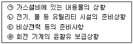
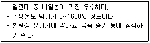

가스산업기사 (2019-03-03 기출문제)
1과목: 연소공학
1. 다음 중 연소속도에 영향을 미치지 않는 것은?
- 관의 단면적
- 내염표면적
- 염의 높이
- 관의 염경
(정답률: 84%)

2. 배관 내 혼합가스의 한 점에서 착화되었을 때 연소파가 일정거리를 진행한 후 급격히 화염전파속도가 증가되어 1000~3500m/s에 도달하는 경우가 있다. 이와 같은 현상을 무엇이라 하는가?
- 폭발(Explosion)
- 폭굉(Detonation)
- 충격(Shock)
- 연소(Combustion)
(정답률: 91%)
3. (CO2)max는 어느 때의 값인가?
- 실제 공기량으로 연소시켰을 때
- 이론 공기량으로 연소시켰을 때
- 과잉 공기량으로 연소시켰을 때
- 부족 공기량으로 연소시켰을 때
(정답률: 86%)
4. 가연물의 연소형태를 나타낸 것 중 틀린 것은?
- 금속분-표면연소
- 파라핀-증발연소
- 목재-분해연소
- 유황-확산연소
(정답률: 77%)
5. 착화온도가 낮아지는 조건이 아닌 것은?
- 발열량이 높을수록
- 압력이 작을수록
- 반응활성도가 클수록
- 분자구조가 복잡할수록
(정답률: 67%)
6. 이상기체에 대한 설명 중 틀린 것은?
- 이상기체는 분자 상호간의 인력을 무시한다.
- 이상기체에 가까운 실체기체로는 H2, He 등이 있다.
- 이상기체는 분자 자신이 차지하는 부피를 무시한다.
- 저온, 고압일수록 이상기체에 가까워진다.
(정답률: 81%)
7. 휘발유의 한 성분인 옥탄의 완전연소반응식으로 옳은 것은?
- C8H18 + O2 → CO2 + H2O
- C8H18 + 25O2 → CO2 + 18H2O
- 2C8H18 + 25O2 → 16CO2 + 18H2O
- 2C8H18 + O2 → 16CO2 + H2O
(정답률: 84%)
8. 폭굉을 일으킬 수 있는 기체가 파이프 내에 있을 때 폭굉 방지 및 방호에 대한 설명으로 틀린 것은?
- 파이프 라인에 오리피스 같은 장애물이 없도록 한다.
- 공정 라인에서 회전이 가능하면 가급적 완만한 회전을 이루도록 한다.
- 파이프의 지름대 길이의 비는 가급적 작게 한다.
- 파이프 라인에 장애물이 있는 곳은 관경을 축소한다.
(정답률: 86%)
9. 층류 연소속도에 대한 설명으로 옳은 것은?
- 미연소 혼합기의 비열이 클수록 층류 연소속도는 크게 된다.
- 미연소 혼합기의 비중이 클수록 층류 연소속도는 크게 된다.
- 미연소 혼합기의 분자량이 클수록 층류 연소속도는 크게 된다.
- 미연소 혼합기의 열전도율이 클수록 층류 연소속도는 크게 된다.
(정답률: 66%)
10. 다음 탄화수소 연료 중 착화온도가 가장 높은 것은?
- 메탄
- 가솔린
- 프로판
- 석탄
(정답률: 72%)
11. 액체 연료가 공기 중에서 연소하는 현상은 다음 중 어느 것에 해당하는가?
- 증발연소
- 확산연소
- 분해연소
- 표면연소
(정답률: 77%)
12. 메탄 80v%, 프로판 5v%, 에탄 15v%인 혼합가스의 공기 중 폭발하한계는 약 얼마인가?
- 2.1%
- 3.3%
- 4.3%
- 5.1%
(정답률: 71%)
13. 기상폭발에 대한 설명으로 틀린 것은?
- 반응이 기상으로 일어난다.
- 폭발상태는 압력에너지의 축적상태에 따라 달라진다.
- 반응에 의해 발생하는 열에너지는 반응기 내 압력상승의 요인이 된다.
- 가연성혼합기를 형성하면 혼합기의 양에 관계없이 압려파가 생겨 압력상승을 기인한다.
(정답률: 80%)
14. 가스의 성질을 바르게 설명한 것은?
- 산소는 가연성이다.
- 일산화탄소는 불연성이다.
- 수소는 불연성이다.
- 산화에틸렌은 가연성이다.
(정답률: 81%)
15. 임계상태를 가장 올바르게 표한한 것은?
- 고체, 액체, 기체가 평형으로 존재하는 상태
- 순수한 물질이 평형에서 기체-액체로 존재할 수 있는 최고 온도 및 압력 상태
- 액체상과 기체상이 공존할 수 있는 최소한의 한계상태
- 기체를 일정한 온도에서 압축하면 밀도가 아주 작아져 액화가 되기 시작하는 상태
(정답률: 70%)
16. 폭발에 관련된 가스의 성질에 대한 설명으로 틀린 것은?
- 폭발범위가 넓은 것은 위험하다.
- 압력이 높게되면 일반적으로 폭발범위가 좁아진다.
- 가스의 비중이 큰 것은 낮은 곳에 체류할 염려가 있다.
- 연소 속도가 빠를수록 위험하다.
(정답률: 86%)
17. 동일 체적의 에탄, 에틸렌, 아세틸렌을 완전 연소시킬 때 필요한 공기량의 비는?
- 3.5 : 3.0 : 2.5
- 7.0 : 6.0 : 6.0
- 4.0 : 3.0 : 5.0
- 6.0 : 6.5 : 5.0
(정답률: 78%)
18. 기체 연료 중 수소가 산소와 화합하여 물이 생성되는 경우에 있어 H2 : O2 : H2O 의 비례 관계는?
- 2 : 1 : 2
- 1 : 1 : 2
- 1 : 2 : 1
- 2 : 2 : 3
(정답률: 81%)
19. 수소가스의 공기 중 폭발범위로 가장 가까운 것은?
- 2.5 ~ 81%
- 3 ~ 80%
- 4.0 ~ 75%
- 12.5 ~ 74%
(정답률: 85%)
20. 에틸렌(Ethylene) 1m3를 완전 연소시키는데 필요한 산소의 양은 약 몇 m3 인가?
- 2.5
- 3
- 3.5
- 4
(정답률: 67%)
2과목: 가스설비
21. 전기방식을 실시하고 있는 도시가스 매몰배관에 대하여 전위측정을 위한 기준 전극으로 사용되고 있으며, 방식전위 기준으로 상한값 –0.85V 이하를 사용하는 것은?
- 수소 기준전극
- 포화 황산동 기준전극
- 염화은 기준전극
- 칼로멜 기준전극
(정답률: 73%)
22. 알루미늄(Al)의 방식법이 아닌 것은?
- 수산법
- 황산법
- 크롬산법
- 메타인산법
(정답률: 64%)
23. 용기 내압시험 시 뷰렛의 용적은 300mL 이고 전증가량은 200mL, 항구증가량은 15mL 일 때 이 용기의 항구증가율은?
- 5%
- 6%
- 7.5%
- 8.5%
(정답률: 69%)
24. 고압가스 일반제조시설에서 고압가스설비의 내압시험압력은 상용압력의 몇 배 이상으로 하는가?
- 1
- 1.1
- 1.5
- 1.8
(정답률: 78%)
25. LPG 용기의 내압시험 압력은 얼마 이상이어야 하는가? (단, 최고충전압력은 1.56MPa 이다.)
- 1.56 MPa
- 2.08 MPa
- 2.34 MPa
- 2.60 MPa
(정답률: 53%)
26. 1단 감압식 저압조정기에 최대 폐쇄압력 성능은?
- 3.5 kPa 이하
- 5.5 kPa 이하
- 95 kPa 이하
- 조정압력의 1.25배 이하
(정답률: 54%)
27. 다층 진공 단열법에 대한 설명으로 틀린 것은?
- 고진공 단열법과 같은 두께의 단열재를 사용해도 단열효과가 더 우수하다.
- 최고의 단열성능을 얻기 위해서는 높은 진공도가 필요하다.
- 단열층이 어느 정도의 압력에 잘 견딘다.
- 저온부일수록 온도분포가 완만하여 불리하다.
(정답률: 72%)
28. 소형저장탱크에 대한 설명으로 틀린 것은?
- 옥외에 지상설치식으로 설치한다.
- 소형저장탱크를 기초에 고정하는 방식은 화재 등의 경우에도 쉽게 분리되지 않는 것으로 한다.
- 건축물이나 사람이 통행하는 구조물의 하부에 설치하지 아니한다.
- 동일 장소에 설치하는 소형저장탱크의 수는 6기 이하로 한다.
(정답률: 71%)
29. 고압 산소 용기로 가장 적합한 것은?
- 주강용기
- 이중용접용기
- 이음매 없는 용기
- 접합용기
(정답률: 86%)
30. 탄소강에 대한 설명으로 틀린 것은?
- 용도가 다양하다.
- 가공 변형이 쉽다.
- 기계적 성질이 우수하다.
- C의 양이 적은 것은 스프링, 공구가 등의 재료로 사용된다.
(정답률: 74%)
31. LPG 저장탱크에 가스를 충전하려면 가스의 용량이 상용온도에서 저장탱크 내용적의 얼마를 초과하지 아니하여야 하는가?
- 95 %
- 90 %
- 85 %
- 80 %
(정답률: 80%)
32. 내진 설계 시 지반의 분류는 몇 종류로 하고 있는가?
- 6
- 5
- 4
- 3
(정답률: 67%)
33. 압축기 실린더 내부 윤활유에 대한 설명으로 틀린 것은?
- 공기 압축기에는 광유(鑛油)를 사용한다.
- 산소 압축기에는 기계유를 사용한다.
- 염소 압축기에는 진한 황산을 사용한다.
- 아세틸렌 압축기에는 양질의 광유(鑛油)를 사용한다.
(정답률: 77%)
34. 냉동설비에 사용되는 냉매가스의 구비조건으로 틀린 것은?
- 안전성이 있어야 한다.
- 증기의 비체적이 커야 한다.
- 증발열이 커야 한다.
- 응고점이 낮아야 한다.
(정답률: 69%)
35. 유체가 흐르는 관의 지름이 입구 0.5m, 출구 0.2m이고, 입구유속이 5m/s 라면 출구유속은 약 몇 m/s 인가?
- 21
- 31
- 41
- 51
(정답률: 60%)
36. 저온장치에서 CO2와 수분이 존재할 때 그 영향에 대한 설명으로 옳은 것은?
- CO2는 저온에서 탄소와 산소로 분리된다.
- CO2는 저장장치에서 촉매 역할을 한다.
- CO2는 가스로서 별로 영향을 주지 않는다.
- CO2는 드라이아이스가 되고 수분은 얼음이 되어 배관 밸브를 막아 흐름을 저해한다.
(정답률: 86%)
37. 냉간가공과 열간가공을 구분하는 기준이 되는 온도는?
- 끓는 온도
- 상용 온도
- 재결정 온도
- 섭씨 0도
(정답률: 76%)
38. 냉동기의 성적(성능)계수를 εR로 하고 열펌프의 성적계수를 εH로 할 때 εR과 εH 사이에는 어떠한 관계가 있는가?
- εR ＜ εH
- εR = εH
- εR ＞ εH
- εR ＞ εH 또는 εR ＜ εH
(정답률: 71%)
39. LPG 충전소 내의 가스사용시설 수리에 대한 설명으로 옳은 것은?
- 화기를 사용하는 경우에는 설비내부의 가연성가스가 폭발하한계의 1/4 이하인 것을 확인하고 수리하다.
- 충격에 의한 불꽃에 가스가 인화할 염려는 없다고 본다.
- 내압이 완전히 빠져 있으면 화기를 사용해도 좋다.
- 볼트를 조일 때는 한 쪽만 잘 조이면 된다.
(정답률: 88%)
40. 산소 또는 불활성가스 초저온 저장탱크의 경우에 한정하여 사용이 가능한 액면계는?
- 평형반사식 액면계
- 슬립튜브식 액면계
- 환형유리제 액면계
- 플로트식 액면계
(정답률: 67%)
3과목: 가스안전관리
41. 산소, 수소 및 아세틸렌의 품질검사에서 순도는 각각 얼마 이상이어야 하는가?
- 산소 : 99.5%, 수소 : 98.0%, 아세틸렌 : 98.5%
- 산소 : 99.5%, 수소 : 98.5%, 아세틸렌 : 98.0%
- 산소 : 98.0%, 수소 : 99.5%, 아세틸렌 : 98.5%
- 산소 : 98.5%, 수소 : 99.5%, 아세틸렌 : 98.0%
(정답률: 74%)
42. 일반도시가스사업제조소의 가스홀더 및 가스발생기는 그 외면으로부터 사업장의 경계까지 최고사용압력이 중압인 경우 몇 m 이상의 안전거리를 유지하여야 하는가?
- 5m
- 10m
- 20m
- 30m
(정답률: 58%)
43. 도시가스사업법상 배관 구분 시 사용되지 않는 것은?
- 본관
- 사용자 공급관
- 가정관
- 공급관
(정답률: 63%)
44. 포스핀(PH3)의 저장과 취급 시 주의사항에 대한 설명으로 가장 거리가 먼 것은?
- 환기가 양호한 곳에서 취급하고 용기는 40℃ 이하를 유지한다.
- 수분과의 접촉을 금지하고 정전기발생 방지시설을 갖춘다.
- 가연성이 매우 강하여 모든 발화원으로부터 격리한다.
- 방독면을 비치하여 누출 시 착용한다.
(정답률: 74%)
45. 저장탱크에 부착된 배관에 유체가 흐르고 있을 때 유체의 온도 또는 주위의 온도가 비정상적으로 높아진 경우 또는 호스커플링 등의 접속이 빠져 유체가 누출될 때 신속하게 작동하는 밸브는?
- 온도조절밸브
- 긴급차단밸브
- 감압밸브
- 전자밸브
(정답률: 82%)
46. 액화석유가스 집단공급사업 허가 대상인 것은?
- 70개소 미만의 수요자에게 공급하는 경우
- 전체수용가구수가 100세대 미만인 공동주택 단지 내인 경우
- 시장 또는 군수가 집단공급사업에 의한 공급이 곤란하다고 인정하는 공공주택단지에 공급하는 경우
- 고용주가 종업원의 후생을 위하여 사원주택·기숙사 등에게 직접 공급하는 경우
(정답률: 71%)
47. 시안화수소를 저장하는 때에는 1일 1회 이상 다음 중 무엇으로 가스의 누출 검사를 실시하는가?
- 질산구리벤젠지
- 묽은 질산은 용액
- 묽은 황산 용액
- 염화파라듐지
(정답률: 78%)
48. 액화 프로판을 내용적이 4700L 인 차량에 고정된 탱크를 이용하여 운행 시 기준으로 적합한 것은? (단, 폭발방지장치가 설치되지 않았다.)
- 최대 저장량이 2000kg 이므로 운반책임자 동승이 필요 없다.
- 최대 저장량이 2000kg 이므로 운반책임자 동승이 필요 하다.
- 최대 저장량이 5000kg 이므로 200km 이상 운행시 운반책임자 동승이 필요 하다.
- 최대 저장량이 5000kg 이므로 운행거리에 관계없이 운반책임자 동승이 필요 없다.
(정답률: 61%)
49. 냉매설비에는 안전을 확보하기 위하여 액면계를 설치하여야 한다. 가연성 또는 독성가스를 냉매로 사용하는 수액기에 사용할 수 없는 액면계는?
- 환형유리관액면계
- 정전용량식액면계
- 편위식액면계
- 회전튜브식액면계
(정답률: 65%)
50. 다음 보기에서 고압가스 제조설비의 사용개시 전 점검사항을 모두 나열한 것은?

- ㉠, ㉢
- ㉡, ㉢
- ㉠, ㉡, ㉢
- ㉠, ㉡, ㉢, ㉣
(정답률: 82%)
51. 고압가스 용기(공업용)의 외면에 도색하는 가스 종류별 색상이 바르게 짝지어진 것은?
- 수소 - 갈색
- 액화염소 - 황색
- 아세틸렌 – 밝은 회색
- 액화암모니아 – 백색
(정답률: 82%)
52. LP 가스 용기를 제조하여 분체도료(폴리에스테르계) 도장을 하려 한다. 최소 도장 두께와 도장 횟수는?
- 25μm, 1회 이상
- 25μm, 2회 이상
- 60μm, 1회 이상
- 60μm, 2회 이상
(정답률: 64%)
53. 고압가스 특정제조시설에서 고압가스 설비의 수리 등을 할 때의 가스치환에 대한 설명으로 옳은 것은?
- 가연성가스의 경우 가스의 농도가 폭발하한계의 1/2에 도달할 때까지 치환한다.
- 가스 치환 시 농도의 확인은 관능법에 따른다.
- 불활성 가스의 경우 산소의 농도가 16% 이하에 도달할 때까지 공기로 치환한다.
- 독성가스의 경우 독성가스의 농도가 TLV-TWA 기준농도 이하로 될 때까지 치환을 계속한다.
(정답률: 80%)
54. 가연성 액화가스 저장탱크에서 가스누출에 의해 화재가 발생했다. 다음 중 그 대책으로 가장 거리가 먼 것은?
- 즉각 송입 펌프를 정지시킨다.
- 소정의 방법으로 경보를 울린다.
- 즉각 저조 내부의 액을 모두 플로우-다운(flow-down) 시킨다.
- 살수 장치를 작동시켜 저장탱크를 냉각한다.
(정답률: 69%)
55. 고압가스 용기의 파열사고 주 원인은 용기의 내압력(耐壓力) 부족에 기인한다. 내압력 부족의 원인으로 가장 거리가 먼 것은?
- 용기내벽의 부식
- 강재의 피로
- 적정 충전
- 용접 불량
(정답률: 86%)
56. 저장능력 18000m3 인 산소 저장시설은 전시장, 그 밖에 이와 유사한 시설로서 수용능력이 300인 이상인 건축물에 대하여 몇 m 의 안전거리를 두어야 하는가?
- 12 m
- 14 m
- 16 m
- 18 m
(정답률: 67%)
57. 고압가스 특정설비 제조자의 수리범위에 해당되지 않는 것은?
- 단열재 교체
- 특정설비의 부품 교체
- 특정설비의 부속품 교체 및 가공
- 아세틸렌 용기 내의 다공질물 교체
(정답률: 76%)
58. 가스사용시설에 상자콕 설치 시 예방 가능한 사고유형으로 가장 옳은 것은?
- 연소기 과열 화재사고
- 연소기 폐가스 중독 질식사고
- 연소가 호스 이탈 가스 누출사고
- 연소기 소화안전장치 고장 가스 폭발사고
(정답률: 75%)
59. 고압가스 저장시설에서 가스누출 사고가 발생하여 공기와 혼합하여 가연성, 독성가스로 되었다면 누출된 가스는?
- 질소
- 수소
- 암모니아
- 아황산가스
(정답률: 73%)
60. 액화석유가스의 안전관리 및 사업법에 의한 액화석유가스의 주성분에 해당도지 않는 것은?
- 액화된 프로판
- 액화된 부탄
- 기화된 프로판
- 기화된 메탄
(정답률: 72%)
4과목: 가스계측
61. 가스 사용시설의 가스누출 시 검지법으로 틀린 것은?
- 아세틸렌 가스누출 검지에 염화제1구리착염지를 사용한다.
- 황화수소 가스누출 검지에 초산납시험지를 사용한다.
- 일산화탄소 가스누출 검지에 염화파라듐지를 사용한다.
- 염소 가스누출 검지에 묽은 황산을 사용한다.
(정답률: 62%)
62. 차압식 유량계로 유량을 측정하였더니 교축기구 전후의 차압이 20.25 Pa 일 때 유량이 25m3/h 이었다. 차압이 10.50 Pa 일 때의 유량은 약 몇 m3/h 인가?
- 13
- 18
- 23
- 28
(정답률: 49%)
63. 화학공장에서 누출된 유독가스를 신속하게 현장에서 검지 정량하는 방법은?
- 전위적정법
- 흡광광도법
- 검지관법
- 적정법
(정답률: 76%)
64. 제어동작에 따른 분류 중 연속되는 동작은?
- On-Off 동작
- 다위치 동작
- 단속도 동작
- 비례 동작
(정답률: 80%)
65. 피드백(Feed back)제어에 대한 설명으로 틀린 것은?
- 다른 제어계보다 판단·기억의 논리기능이 뛰어나다.
- 입력과 출력을 비교하는 장치는 반드시 필요하다.
- 다른 제어계보다 정확도가 증가된다.
- 제어대상 특성이 다소 변하더라도 이것에 의한 영향을 제어할 수 있다.
(정답률: 59%)
66. 액위(level) 측정 계측기기의 종류 중 액체용 탱크에 사용되는 사이트글라스(Sight Glass)의 단점에 해당하지 않는 것은?
- 측정범위가 넓은 곳에서 사용이 곤란하다.
- 동결방지를 위한 보호가 필요하다.
- 파손되기 쉬우므로 보호대책이 필요하다.
- 내부 설치 시 요동(Turbulence)방지를 위해 Stilling Chamber 설치가 필요하다.
(정답률: 64%)
67. 계량이 정확하고 사용 기차의 변동이 크지 않아 발열량 측정 및 실험실의 기준 가스미터로 사용되는 것은?
- 막식 가스미터
- 건식 가스미터
- Roots 가스미터
- 습식 가스미터
(정답률: 79%)
68. 시안화수소(HCN)가스 누출 시 검지지와 변색상태로 옳은 것은?
- 염화파라듐지 - 흑색
- 염화제1구리착염지 - 적색
- 연당지 - 흑색
- 초산(질산) 구리벤젠지 – 청색
(정답률: 72%)
69. 가스는 분자량에 따라 다른 비중 값을 갖는다. 이 특성을 이용하는 가스분석기기는?
- 자기식 O2 분석기기
- 밀도식 CO2 분석기기
- 적외선식 가스분석기기
- 광화학 발광식 NOx 분석기기
(정답률: 75%)
70. 오르차트 분석법은 어떤 시약이 CO를 흡수하는 방법을 이용하는 것이다. 이때 사용하는 흡수액은?
- 수산화나트륨 25% 용액
- 암모니아성 염화 제1구리용액
- 30% KOH 용액
- 알칼리성 피로갈롤용액
(정답률: 61%)
71. 제어기기의 대표적인 것을 들면 검출기, 증폭기, 조작기기, 변환기로 구분되는데 서보전동기(servo motor)는 어디에 속하는가?
- 검출기
- 증폭기
- 변환기
- 조작기기
(정답률: 77%)
72. 다음 보기에서 설명하는 열전대 온도계는?

- 백금-백금·로듐 열전대
- 크로멜-알루멜 열전대
- 철-콘스탄탄 열전대
- 동-콘스탄탄 열전대
(정답률: 77%)
73. 도시가스로 사용하는 NG의 누출을 검지하기 위하여 검지기는 어느 위치에 설치하여야 하는가?
- 검지기 하단은 천장면의 아래쪽 0.3m 이내
- 검지기 하단은 천장면의 아래쪽 3m 이내
- 검지기 상단은 바닥면에서 위쪽으로 0.3m 이내
- 검지기 상단은 바닥면에서 위쪽으로 3m 이내
(정답률: 72%)
74. 다음 중 기본단위가 아닌 것은?
- 킬로그램(kg)
- 센티미터(cm)
- 캘빈(K)
- 암페어(A)
(정답률: 73%)
75. 열전도형 진공계 중 필라멘트의 열전대로 측정하는 열전대 진공계의 측정 범위는?
- 10-5 ~ 10-3 torr
- 10-3 ~ 0.1 torr
- 10-3 ~ 1 torr
- 10 ~ 100 torr
(정답률: 71%)
76. 온도 49℃, 압력 1atm의 습한 공기 2⑤kg의 10kg의 수증기를 함유하고 있을 때 이 공기의 절대습도는? (단, 49℃에서 물의 증기압은 88mmHg 이다.)
- 0.025kg H2O/kg dryair
- 0.048kg H2O/kg dryair
- 0.⑤1kg H2O/kg dryair
- 0.25kg H2O/kg dryair
(정답률: 49%)
77. 면적유량계의 특징에 대한 설명으로 틀린 것은?
- 압력손실이 아주 크다.
- 정밀 측정용으로는 부적당하다.
- 슬러지 유체의 측정이 가능하다.
- 균등 유량 눈금으로 측정치를 얻을 수 있다.
(정답률: 57%)
78. 다음 중 정도가 가장 높은 가스미터는?
- 습식 가스미터
- 벤투리 미터
- 오리피스 미터
- 루트 미터
(정답률: 73%)
79. 최대 유량이 10m3/h 인 막식 가스미터기를 설치하여 도시가스를 사용하는 시설이 있다. 가스레인지 2.5m3/h를 1일 8시간 사용하고, 가스보일러 6m3/h를 1일 6시간 사용했을 경우 월 가스사용량은 약 몇 m3 인가? (단, 1개월은 31일이다.)
- 1570
- 1680
- 1736
- 1950
(정답률: 64%)
80. 다음 온도계 중 가장 고온을 측정할 수 있는 것은?
- 저항 온도계
- 서미스터 온도계
- 바이메탈 온도계
- 광고온계
(정답률: 74%)